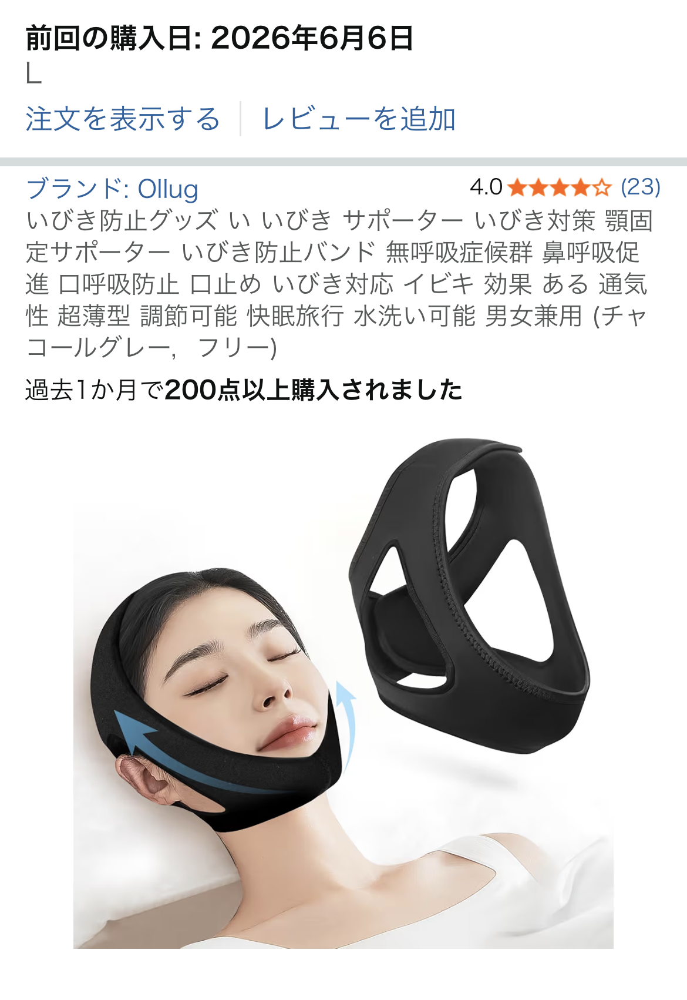

いびき防止グッズ 顎固定サポーターを口コミから正直レビュー【ゴム臭と説明不足は要チェック】

この記事では、「いびき防止グッズ い いびき サポーター いびき対策 顎固定サポーター いびき防止バンド」（以下、いびき防止サポーター）について、実際の口コミをベースに良い点・イマイチな点をできるだけ具体的に整理していきます。
いびき対策グッズは「合う・合わない」がハッキリ出やすく、失敗するとほぼ使わなくなってしまうアイテムです。だからこそ、購入前に使用感・ニオイ・装着方法といった細かいポイントを把握しておくことが大切です。
口コミから分かった「いびき防止サポーター」の第一印象
参考にした口コミでは、評価は星5つ中2つとかなり辛口。理由として挙げられていたのが、主に次の2点です。
- 説明書が一切入っておらず、正しい装着方法が分かりにくい
- 開封直後のゴム臭が強く、頭に着けるものとしては気になる
とくに「袋に入っただけの状態で届き、説明書がない」という点は、初めていびき防止グッズを使う人にとっては大きな不安材料です。装着位置が少しズレるだけで効果が変わるタイプのアイテムなので、使い方が分かりにくい＝効果を実感しにくいという悪循環にもつながりかねません。
また、「最初使おうとしたらゴム臭くて嫌だった」という声もあり、ニオイに敏感な人はここで一気にテンションが下がってしまうはずです。頭や顔まわりに直接触れるものなので、開封直後のニオイは想像以上にストレスになりやすいポイントと言えます。
それでも「いびき防止サポーター」に期待できるポイント
一方で、この手の顎固定タイプのいびき防止バンドは、口が開いてしまうタイプのいびきに対しては理論上かなり相性が良いアイテムです。睡眠中に口が開くと、口呼吸になりやすく、喉が乾燥していびきが出やすくなります。顎をやさしく支えて口の開きを抑えることで、「口が開きっぱなし問題」を物理的にサポートしてくれるのがこのジャンルの強みです。
また、マウスピース系のいびき対策グッズと比べると、歯や顎への圧迫感が少ない場合が多いのもメリットです。慣れてしまえば、バンドを巻くだけで準備が完了するので、毎日のルーティンに組み込みやすいという利点もあります。
今回の口コミでは「使用感はこれから」とのことで、実際の効果までは語られていませんが、「期待を込めて星2つ」という評価は、まだ見切りをつけたわけではないとも読めます。ニオイや説明不足といった不満点を許容できるなら、試してみる価値は残っていると言えるでしょう。
デメリット・注意点：ゴム臭と説明不足は事前に理解しておく
口コミから見えてくるデメリットは、次のように整理できます。
- 説明書がない・情報が少ない
装着方法が図解されていないと、前後の向きや締め付け具合が分かりにくく、結果として「効いているのか分からない」という状態になりがちです。購入前に商品ページの画像や説明をよく確認し、装着イメージを自分の中で再現できるかをチェックしておくと失敗しにくくなります。 - 開封直後のゴム臭が気になる可能性
ゴム製品特有のニオイは、時間の経過や陰干しで軽減することもありますが、ニオイの感じ方には個人差があります。「頭に着けるものだからニオイは絶対に無理」という人には不向きと言えます。
こうした点から、「商品としてダメなのでは？」という厳しめの感想が出ているのも納得です。ただし、これはあくまで一つの口コミに基づく印象であり、すべての個体・すべてのユーザーに当てはまるとは限りません。購入を検討する際は、他のレビューもあわせて読み、総合的に判断することをおすすめします。
こんな人には試す価値あり・こんな人にはおすすめしにくい
口コミと一般的ないびき対策の考え方を踏まえると、いびき防止サポーターは次のような人に向いています。
- 口が開いてしまうタイプのいびきに悩んでいる人
- マウスピースが合わず、別の物理的な対策を探している人
- 多少のニオイや説明不足は、自分で工夫してカバーできる人
逆に、次のような人にはあまりおすすめしにくいアイテムです。
- ニオイに非常に敏感で、ゴム臭が少しでも気になると使えない人
- 説明書がないと不安で、細かい装着方法まで丁寧に知りたい人
- いびきの原因が鼻づまりや持病など、別要因にある可能性が高い人
いびき対策グッズは、体質や睡眠環境によって効果の出方が大きく変わります。本記事の内容はあくまで一つの口コミと一般的な傾向に基づくものであり、効果を保証するものではありません。実際の仕様・詳細・最新情報については、必ずAmazonの商品ページで確認してください。
まとめ：デメリットを理解したうえで「試してみる」スタンスならアリ
「いびき防止グッズ い いびき サポーター いびき対策 顎固定サポーター いびき防止バンド」は、口コミを見る限り、開封直後のゴム臭と説明不足がネックになりやすい商品です。一方で、顎を支えて口の開きを